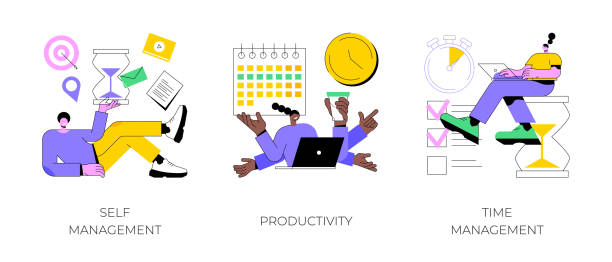
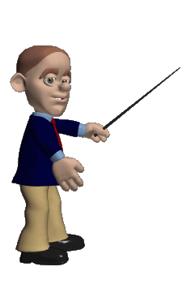

¿Por qué el Scrum Master no debe actuar como jefe del equipo de desarrollo?
El Scrum Master no debe actuar como jefe del equipo de desarrollo porque su función no es dar órdenes ni dirigir jerárquicamente, sino facilitar la correcta implementación del marco Scrum
Su rol es el de un líder servicial, disponible para ayudar al equipo a alcanzar su máximo rendimiento, eliminando obstáculos, fomentando la comunicación efectiva y promoviendo la mejora continua
Participa activamente en eventos como las Daily Scrum, las Retrospectives y las Reviews, asegurándose de que se mantenga el enfoque ágil y el respeto por la autoorganización del equipo de desarrollo.

Hola, te invito a ver las fuentes para este articulo y a visitar la siguiente pagina

